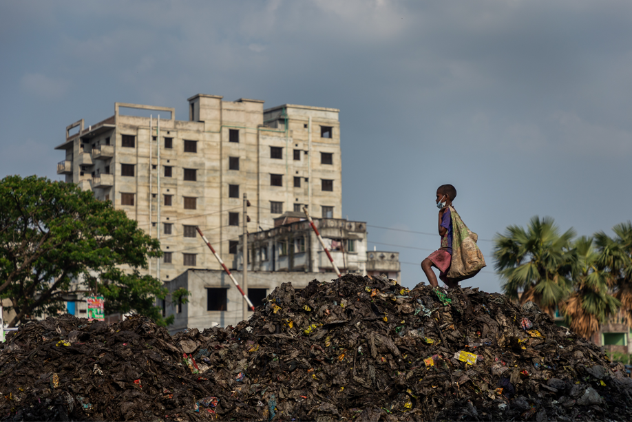

PRÁTICAS NÃO
SUSTENTÁVEIS
DESCARTE INCORRETO
Jogar equipamentos eletrônicos no lixo comum pode causar impactos ambientais e dificultar o reaproveitamento de seus materiais.

TROCAS DESNECESSÁRIAS
Substituir aparelhos constantemente, mesmo quando ainda funcionam, aumenta o consumo de recursos e a geração de resíduos.
DESPERDÍCIO DE ENERGIA
Deixar computadores e outros equipamentos ligados sem necessidade aumenta o consumo de energia e seus impactos.